10.092026 年・寒露・畢業專題
今天的題目
藝術創齡
當課堂結束、老師不在身邊，藝術能不能成為退休生活裡，一個自然的選擇？
小提示我們走訪 5 個繪畫場域，訪談 6 位老師與 15 位以上的學員，發現卡住長輩的往往不是畫具，而是「不知道怎麼開始」與「怕被看見畫不好」。
今天的題目
當課堂結束、老師不在身邊，藝術能不能成為退休生活裡，一個自然的選擇？
高齡社會不只是要活得更久，也關乎如何持續參與生活、發展興趣，並與人保持連結。
台灣已進入超高齡社會，高齡生活將成為愈來愈重要的設計情境。
世界衛生組織強調，健康老化不只關乎疾病，而是創造讓人能持續學習、做自己重視的事的環境。
的高齡者處於社會孤立狀態；高品質的社會連結與福祉密切相關。
我們原本以為，阻礙長輩畫水彩的是老化帶來的身體限制。走進畫室之後，看到的是另一件事。
2026 年 8 月到 10 月，我們跟著老師上課、觀察學員作畫，並進行老師與學員訪談。
心岑老師
訪談兩次，釐清「不敢下筆／暴衝下筆」的根源：個性、繪畫經驗與成果期待。
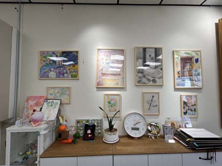
何妍儀（禾豆豆）老師
跟隨老師一日多場課程觀察，並訪談 65 歲男性與 70 歲女性學員。
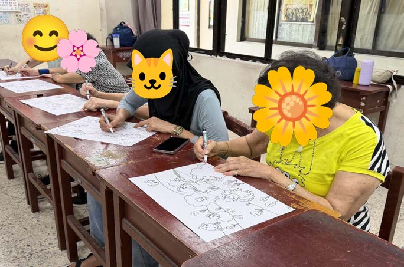
魏崇安老師
訪談初學者如何跨出第一步、卡關原因、媒材的心理差異與寫生門檻。
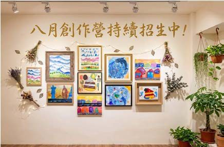
PEMA 老師（創辦人）
訪談成人如何建立信心、課後是否自主創作，以及工具如何進入生活。
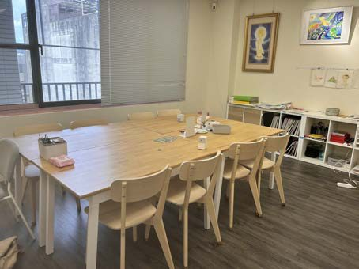
莉莉老師
一日課堂觀察，訪談老師、6 位退休女性學員群訪與年輕學員個別訪談。
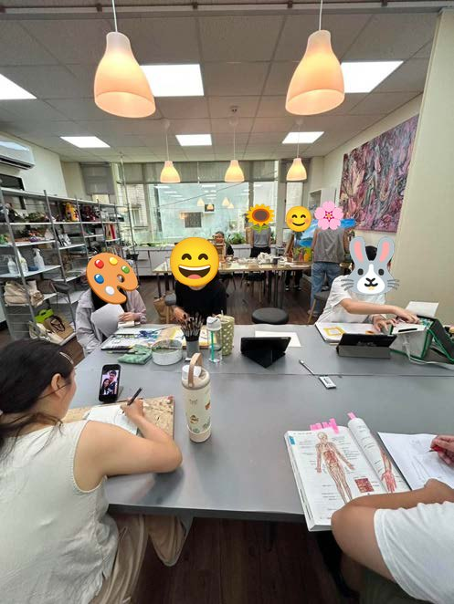
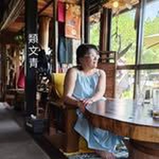
酷妹（徐江妹）老師
一日課堂觀察，訪談老師與 6 位不同年資的學員。
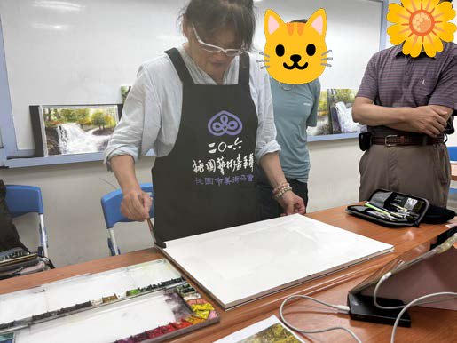
新活藝術 彭恩寧營運長
展場專業訪談：創作動機、鼓勵方式、外出參與、數位媒介與場域驗證建議。
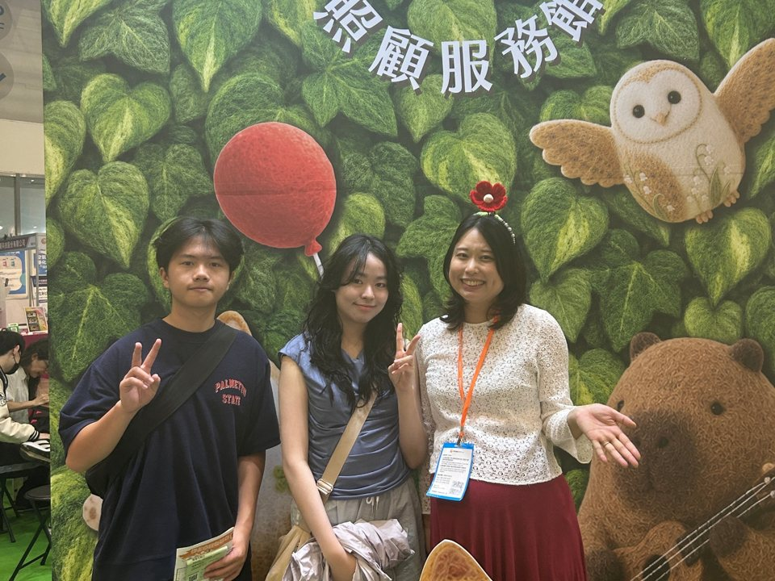
禾豆豆銀髮藝術 何妍儀老師
參觀「爺爺奶奶作品展」展位，並就節氣日曆、寫生與 LINE 貼圖等概念再次請教老師。
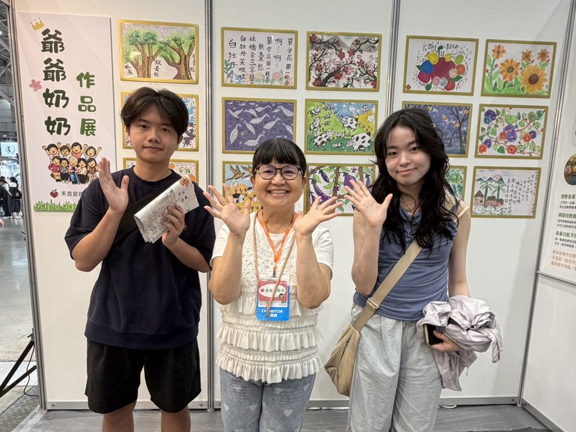
共 5 個研究場域、6 位授課教師、15 位以上受訪學員，並於台北國際照顧博覽會向 2 位高齡藝術專業者請益概念回饋。
跨場域比較後，幾個現象反覆出現。
「主要是要有勇氣吧。」禾豆豆課堂學員
老師在現場默默承擔了示範、提示、鼓勵與確認。這套隱形的支持系統一旦不在身邊，長輩就很少自己開始。
「在家沒人看，畫壞撕掉重來即可。」桃園救國團學員（班長）
許多學員曾是主管或老闆，得失心重。他們偏好回家獨自練習，但作品完成後，家人的一句稱讚或一次成果展，能帶來很大的成就感。
「到戶外，坐在那裡看到整個畫面，我會不知道要畫這裡、還是畫那裡。」桃園救國團學員（電控大哥）
輕便畫具已經不難取得。真正讓人退縮的，是面對動態場景時要自己決定看哪裡、從哪開始，以及怕熱、怕路人眼光。
「你就是應該要方便，你才會想要帶。」酷妹老師
資深創作者會把畫具縮小、磁吸、重新組合。他們需要的不是更多功能，而是能配合自己習慣的配置方式。
「如果是戶外走走，那就戶外走走，找一些有趣的照片，大家拍一拍就好了。」新活藝術 彭恩寧營運長
拍照、觀察、蒐集素材再回家畫，也是一種藝術參與，而且門檻更低。
我們試過以年齡、身份、經驗分類，最後改用「創作自主度」與「評價包袱」兩個面向，描述受訪者真正的差異。
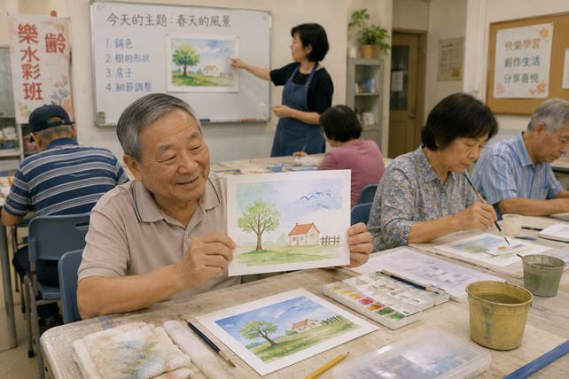
被動接收架構 × 低評價包袱
痛點：缺乏外部啟動
跟著課程開心完成作品，但沒有老師、題目或活動安排時，很少自己開始。
「我不是想成為畫家，只是想在有人帶領下，享受輕鬆又有成就感的創作時間。」
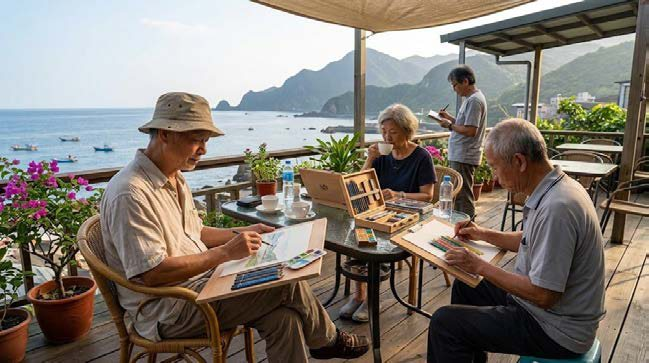
自主篩選轉化 × 低評價包袱
痛點：工具限制創作自由
已有自己的創作方式，把畫畫融入生活與旅行，但市售畫具笨重、零散，不符合自己的習慣。
「我想用自己的節奏，畫出讓我感動的生活。」
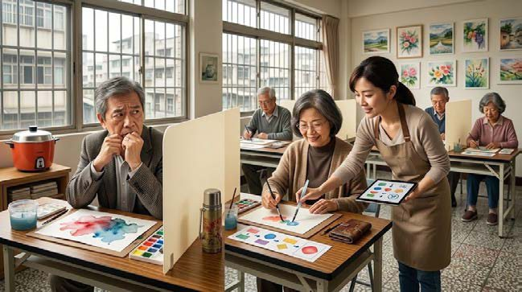
被動接收架構 × 高評價包袱
痛點：害怕畫錯與被評價
想開始創作，但不知道從何下手，水分一失控就想撕掉重畫，也怕被旁人注視。
「我不是不想畫，只是怕畫錯很丟臉。」
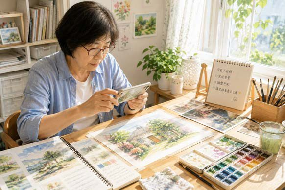
自主篩選轉化 × 高評價包袱
痛點：理想與成果存在落差
能自主創作，也越來越看得見自己和理想之間的差距，需要適量的專業回饋確認方向。
「我想知道自己哪裡還能更好，也想確定自己真的有在進步。」
照片為情境示意圖。上排為低評價包袱、下排為高評價包袱；左欄較依賴外部架構，右欄較能自主篩選與轉化。
從最初的工具組提案，到目前的兩個概念，每一步都回到田野修正方向。
從高齡生理限制出發，提出專用畫具與步驟化引導冊。
發現工具不是主要痛點，「不知道下一步」與「怕被評價」才是關鍵。
放棄以年齡分類，改用創作自主度與評價包袱描述差異。
包含自由配置畫具、Open Art Day、Creative Bookmark、日曆生活繪畫冊等。
把藝術參與看成「創作前、中、後、再次創作」的循環，篩選值得介入的位置。
隨行創作工具包、日曆繪畫新生活、創作書籤。
依博覽會專業回饋調整：降低門檻、紙本優先、數位只在需要時出現。
概念一・對應 A 低壓參與型 × B 自在沉浸型
「不是一定要創作，而是讓他多一個生活的選擇。」
課程提供了固定時段的藝術活動，但創作不一定只能發生在上課時。生活創作日曆借用撕日曆這個本來就存在的日常習慣，每天給一個小小的題目，讓藝術自然融入退休生活。
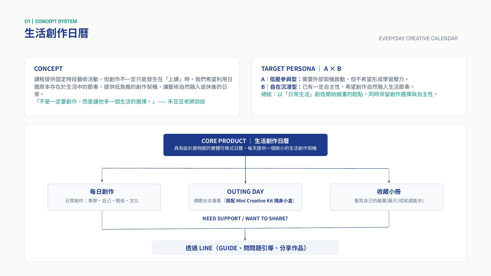
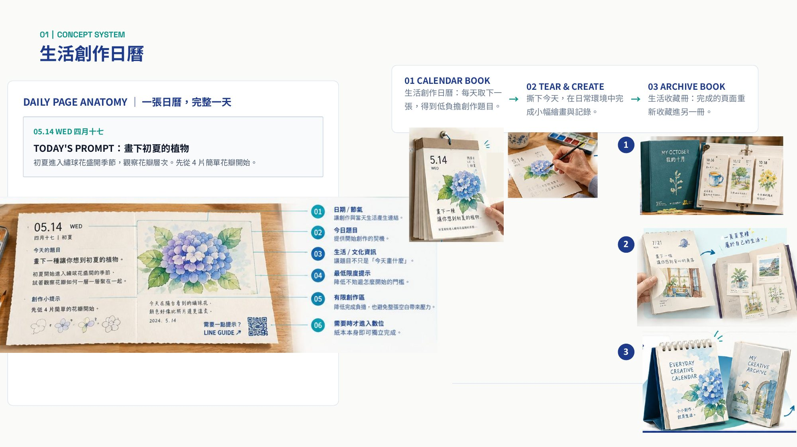
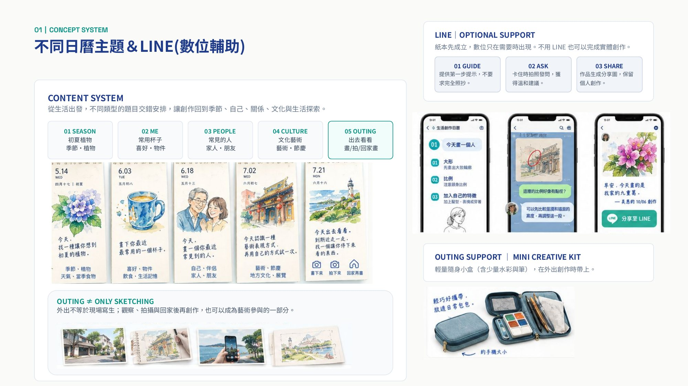
概念二・對應 B 自在沉浸型 × D 進步校準型
不是為了畫畫而出門，而是在出門之後，自然開始創作。
在博物館、旅途中或公園散步時，觀察、留下參考物、快速創作、再把作品收進自己的生活採集冊。我們正在比較三種結構：像書一樣左右展開、展開後形成穩定工作面的折翼式，以及打開就是創作桌面的薄盒式。
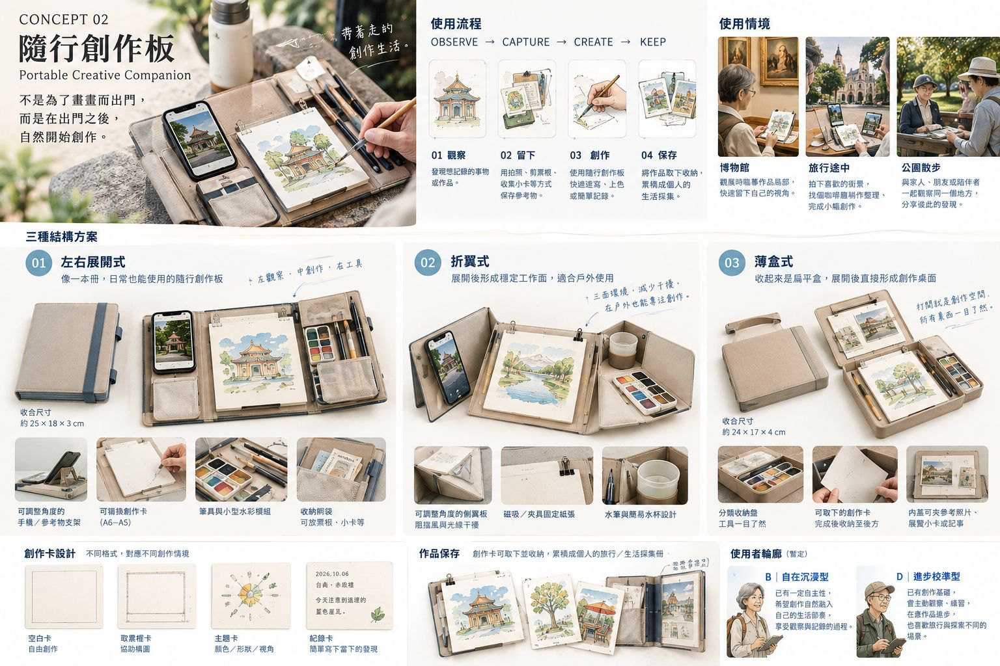
所有訪談逐字稿與簡報都整理成 Markdown 文字檔，可以直接閱讀，也方便 AI 讀取。學員一律以編號呈現。
01_發表/、02_訪談逐字稿/、03_訪談題綱/ 資料夾；檔案末尾標為「整理者備註」的段落是研究者分析，不是受訪者原話。